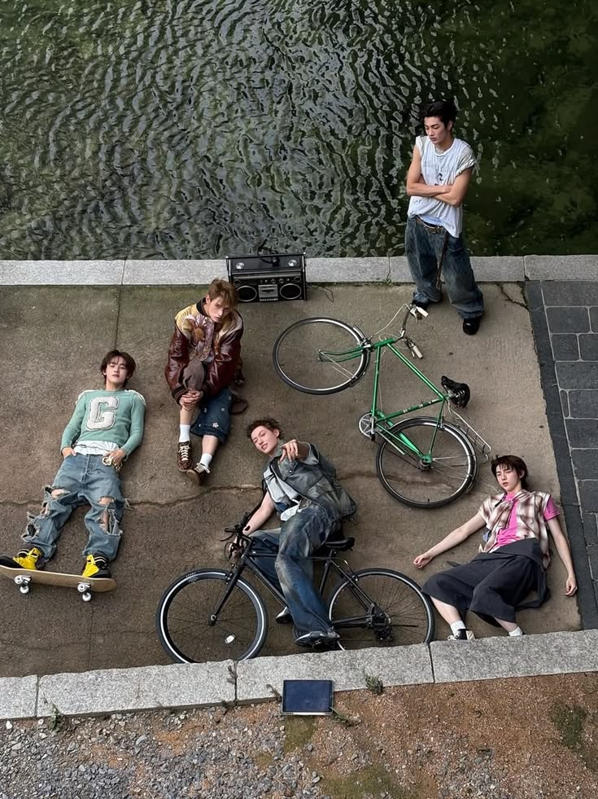

JOURNAL
NOTES FROM SODO
Releases, stories and quiet notes behind the SODO archive.

2026.07.09 / DROP NOTE
SODO DROP 01 RELEASE
SODO의 첫 번째 드롭은 도시의 중심에서 조금 벗어난 공간, 오래된 벽과 거친 그래픽, 조용한 여름의 태도에서 출발합니다. 이번 컬렉션은 손그림, 타이포그래피, 스트릿 무드를 바탕으로 한 그래픽 티셔츠 아카이브입니다.
VIEW COLLECTION2026.07.09 / BRAND STORY
RAW HIDEOUT
SODO가 말하는 거칠고 자유로운 아지트의 의미.
022026.07.09 / COLLECTION
GRAPHIC TEE ARCHIVE
그래픽 티셔츠를 하나의 기록물처럼 바라보는 방식.
032026.07.09 / PRODUCT
SUMMER UNIFORM
매일 입을 수 있는 조용한 여름 그래픽 티셔츠.
042026.07.09 / CONCEPT
URBAN SANCTUARY
도시의 법칙 바깥에서 만들어지는 개인적인 문화.
SODO JOURNAL